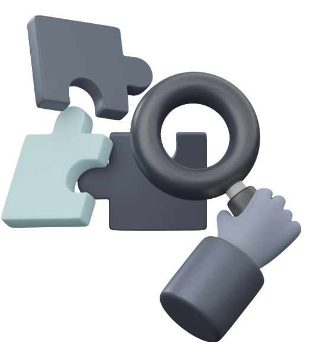
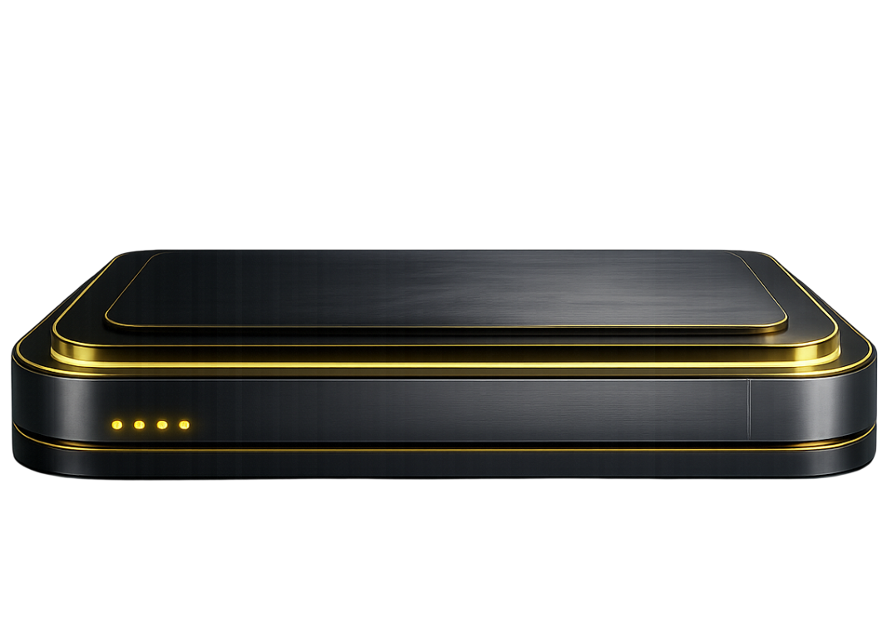
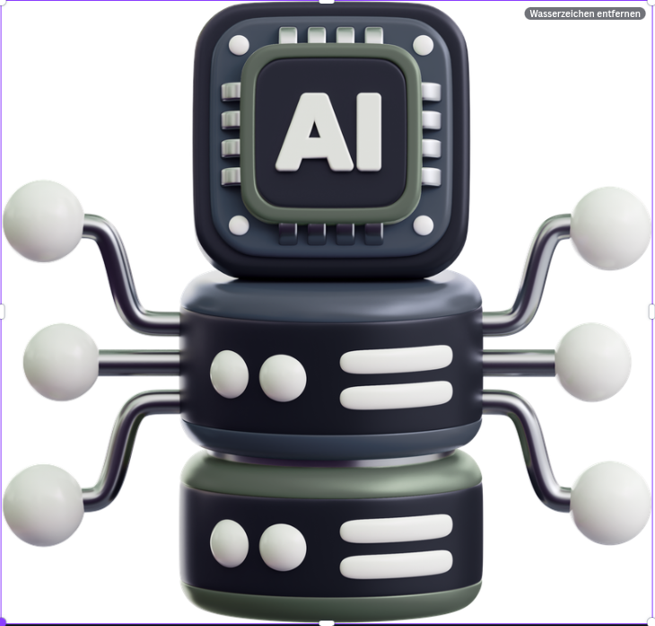
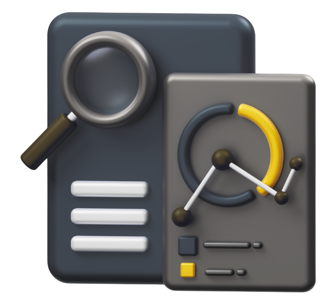
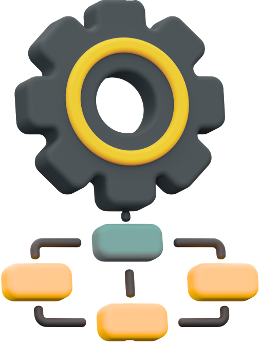
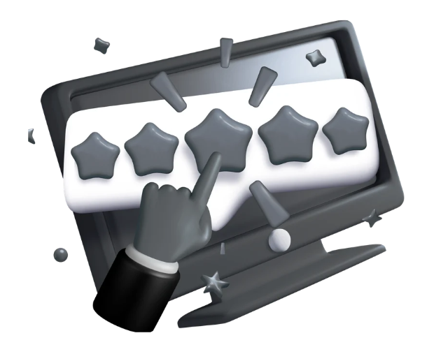
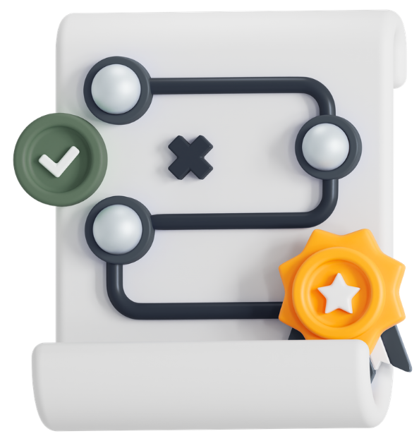
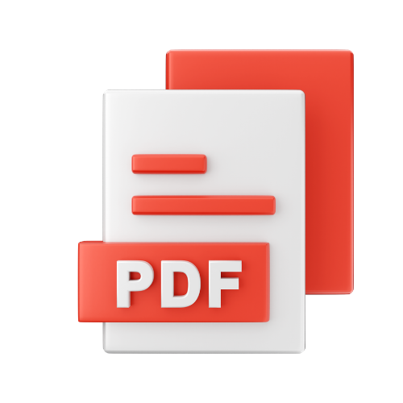

Prozess klären
Welcher Geschäftsprozess verbessert werden soll und welches konkrete Ergebnis durch KI entstehen muss.
INDIVIDUELLE KI-SYSTEME
Von der kostenlosen Potenzialanalyse bis zur einsatzbereiten Lösung in Ihrem Unternehmen.
Warum Nurovelle
KI schafft nur dann echten Nutzen, wenn sie zu den bestehenden
Prozessen,
Daten und Systemen eines Unternehmens passt.
Deshalb beginnt Nurovelle nicht mit einem fertigen Tool, sondern mit der Frage, welcher Ablauf verbessert werden soll und welche technische Lösung dafür tatsächlich sinnvoll ist.
Projektstart
Ob erste Orientierung oder konkrete Projektidee.
Wir prüfen Prozesse, Daten und technische Voraussetzungen und zeigen den passenden nächsten Schritt.
Welcher Geschäftsprozess verbessert werden soll und welches konkrete Ergebnis durch KI entstehen muss.
Welche Daten, Systeme und Wissensquellen bereits vorhanden sind und technisch nutzbar gemacht werden können.
Klicken für mehr Informationen
Ob ein KI-Agent, ein Wissenssystem, Automatisierung oder individuelle Software der sinnvolle nächste Schritt ist.
Pakete
Für wiederkehrende Abläufe in Betreuung, Handwerk und Büro — drei Pakete mit je vier Funktionen.
Wo sich Abläufe in vielen Betrieben gleichen, muss nichts neu entwickelt werden. Diese drei Pakete bündeln je vier Handgriffe, die im jeweiligen Arbeitsalltag täglich anfallen — in einem Programm, das Ihnen gehört und auf Ihrem eigenen Server läuft. Keine Fremd-Cloud nötig.
Betreuung
Für nicht-medizinische Betreuungs- und Alltagsbegleitungsdienste: Dokumentation, Kommunikation und Leistungsnachweise.
799 €Einrichtung, einmalig
69 €Servicevertrag je Monat
Handwerk
Für Handwerksbetriebe auf der Baustelle: Regieberichte, Material, Abnahmen und Prüffristen.
799 €Einrichtung, einmalig
69 €Servicevertrag je Monat
Büro
Für kleine und mittlere Betriebe mit klassischem Büroalltag: Posteingang, Bewertungen, Wissen und Onboarding.
399 €Einrichtung, einmalig
69 €Servicevertrag je Monat
Einführungspreis, gültig für Abschlüsse bis 31.12.2026. Alle Beträge netto zzgl. 19 % MwSt. Der Servicevertrag umfasst Sicherheits- und Funktionsaktualisierungen, Fehlerbehebung und Unterstützung per E-Mail; Mindestlaufzeit 12 Monate, danach monatlich kündbar. Die Software gehört Ihnen und läuft auch ohne Servicevertrag weiter. Nicht enthalten, weil es direkt auf Ihren Namen läuft: der Server (empfohlen 4 Kerne / 8 GB, Standort Deutschland) sowie Versandgebühren Ihres Nachrichtenanbieters. Ein weiteres Paket auf derselben Installation kostet 349 € einmalig und 39 € je Monat.
KI-LEISTUNGEN VON NUROVELLE
Elf Leistungsbereiche, ein durchgehender Ablauf.
Von KI-Agenten und Prozessautomatisierung bis zu Daten-, Wissens- und SEO-Systemen: Wählen Sie den passenden Leistungsbereich für weitere Details.
Hover für mehr InformationenTippen für mehr Informationen
Chancen erkennen und priorisieren
Von der Idee zum belastbaren Plan
Aufgaben abgeben, Kontrolle behalten
Anfragen sofort beantworten, rund um die Uhr
Anrufe automatisch entgegennehmen und weiterleiten
Helfer für den Arbeitsalltag
Bereit für Prüfung und Audit
Prozesse verbinden und entlasten
Verlässliche Daten ohne manuellen Abgleich
Maßgeschneiderte Systeme statt Insellösungen
Mehr Sichtbarkeit, mit Substanz statt Ratespiel
KI-Potenzialanalyse
Ein strukturierter Einstieg statt Verkaufsformular.
Zuerst der Richtwert aus Ihren Angaben. Darunter die passende Stufe: kostenlose Potenzialanalyse oder Tiefgehende Potenzialanalyse als wesentliche Erweiterung.
Grobe Modellrechnung — die echte Analyse betrachtet Ihre Prozesse konkret.
Richtwert auf Basis Ihrer Angaben — kein verbindliches Angebot.
Kostenlos
Die Potenzialanalyse ist kein Verkaufsformular, sondern ein strukturierter Einstieg. Sie zeigt, welche Abläufe aktuell Zeit binden, wo Medienbrüche entstehen und welche Datenquellen bereits vorhanden sind.
Was geprüft wird
Eine klare erste Einschätzung, ob und wo sich KI-Automatisierung lohnt — mit einer Einordnung von Einsparpotenzial, Aufwand, Nutzen und Priorität sowie einer Empfehlung für den sinnvollsten nächsten Schritt.
199 € · für Sie kostenlos
Kein Abo. Keine versteckten Kosten. Formular direkt daneben.
Wesentliche Erweiterung
Die Tiefgehende Potenzialanalyse geht über die kostenlose Potenzialanalyse hinaus. Sobald mehrere Prozesse, eine Investitionsentscheidung oder technische Abhängigkeiten betroffen sind, reicht die erste Einordnung nicht aus. Die kostenlose Analyse ist der übliche Einstieg, aber keine Voraussetzung.
Prozesse, Daten und Systeme werden vollständig erfasst. Daraus entsteht nicht nur eine Einschätzung, sondern ausgearbeiteter Output für die Umsetzung.
Zusätzlicher Output gegenüber der kostenlosen Analyse
Einführungspreis555 € nettoListenpreis699 € netto
Einführungspreis für Anfragen bis 31.12.2026, zzgl. 19 % MwSt. Scope wird vor Start schriftlich festgehalten.
ABLAUF
Sechs Schritte von der Aufgabe bis zum laufenden System.
Von der Prozessaufnahme bis zur Umsetzung schafft jeder Schritt Klarheit über Nutzen, Daten, Schnittstellen und technische Machbarkeit.







Kontakt
Direkter Draht statt Formularschleife.
Ob erste Orientierung oder konkrete Projektidee: In einem unverbindlichen Gespräch klären wir, worum es geht, welche Voraussetzungen bereits vorhanden sind und welcher nächste Schritt sinnvoll ist.

Nurovelle
Sie möchten einen Prozess prüfen, eine konkrete KI-Idee einordnen oder herausfinden, welche Lösung zu Ihrer Ausgangslage passt?
Wir besprechen den aktuellen Stand, die wichtigsten Anforderungen und mögliche nächste Schritte – klar, strukturiert und ohne Verkaufsdruck.
Drei Dokumente zum Mitnehmen, ein Tool zum direkten Ausfüllen.
Praxisnahe Guides, Checklisten und Vorlagen unterstützen Sie bei der Bewertung und Umsetzung von KI- und Automatisierungspotenzialen.

Ausgangslage, Lösungsweg und Ergebnisse eines KI-Projekts.
Formel, Schnellrechner und Priorisierungsmatrix zur Bewertung von Aufwand, Nutzen und ROI.
Praxistaugliche Prompts für präzisere KI-Ergebnisse.
5 Bereiche, 50 Prüfpunkte – direkt online ausfüllen und sofort auswerten.
HÄUFIGE FRAGEN
Was Kunden vor dem ersten Projekt wissen wollen.
Die wichtigsten Fragen zur Potenzialanalyse, Umsetzung und zum Umgang mit Daten.
Nein. Die Potenzialanalyse eignet sich auch dann, wenn zunächst nur ein zeitaufwendiger oder fehleranfälliger Prozess bekannt ist. Gemeinsam wird geprüft, ob KI, Automatisierung, Software oder eine andere Prozessverbesserung sinnvoll ist.
Das Angebot richtet sich an Unternehmen, die wiederkehrende Abläufe verbessern, Informationen schneller nutzbar machen oder bestehende Systeme sinnvoll verbinden möchten. Entscheidend ist nicht die Unternehmensgröße, sondern ein klar abgrenzbarer Prozess oder konkreter Verbesserungsbedarf.
Grundsätzlich ja, sofern geeignete Schnittstellen, Datenzugriffe oder technische Integrationsmöglichkeiten vorhanden sind. Vor der Umsetzung wird geprüft, welche Systeme beteiligt sind und welche Anbindung realistisch und sicher möglich ist.
Das hängt vom Umfang, der Datenlage, den beteiligten Systemen und dem Integrationsaufwand ab. Eine klar abgegrenzte Automatisierung kann deutlich schneller umgesetzt werden als ein komplexes System mit mehreren Schnittstellen und Freigabeprozessen.
Geprüft werden der aktuelle Ablauf, beteiligte Systeme und Datenquellen, manuelle Übergaben, wiederkehrende Aufgaben sowie der mögliche Nutzen einer technischen Lösung. Daraus entsteht eine erste Einordnung von Aufwand, Priorität und sinnvollem nächsten Schritt.
Ja. Lösungen werden an den jeweiligen Prozess, die vorhandenen Systeme und die technischen Anforderungen angepasst. Dazu können KI-Agenten, Automatisierungen, Wissenssysteme, Schnittstellen oder individuelle Software gehören.
Zu Beginn werden Aufgabe, Ziel, Datenlage und bestehende Abläufe geklärt. Danach folgen technische Prüfung, Auswahl des passenden Lösungstyps, Umsetzungsplanung, Entwicklung, Tests und die kontrollierte Einführung in den bestehenden Prozess.
Die Angaben werden geprüft und strukturiert eingeordnet. Anschließend erhalten Sie eine erste Rückmeldung zum möglichen Einsatzbereich, zu offenen Voraussetzungen und zum sinnvollsten nächsten Schritt. Falls weitere Informationen erforderlich sind, werden diese gezielt abgefragt.